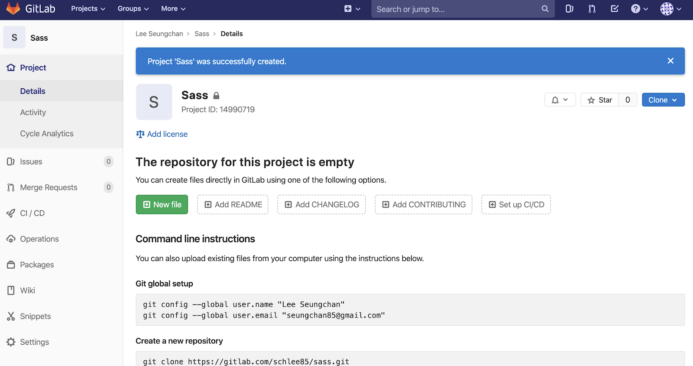

GitLab 이용 가이드
GitLab.com 기본 사용법
-
- Gitlab은 Git의 원격 저장소와 코드 리뷰, 이슈 트래커 기능등을 제공하는 소프트웨어로, 설치형 Github라는 컨셉으로 시작된 프로젝트이기 때문에 Github와 비슷한 면이 많습니다.
패키지 종류
-
- GitLab 패키지는 3가지로 구분됩니다.
-
1. GitLab CE : Community Edition으로 설치형이고 아무런 제한 없이 무료
-
2. GitLab EE : Enterprise Edition으로 설치형이고 매월 유저당 과금. 자세한 내용은 https://about.gitlab.com/pricing/ 참고
-
3. GitLab.com : 클라우드형이고 개인이 가입해서 사용하면 무료
GitLab 의 이해를 도모하기 위해 클라우드형을 사용해 봅니다.
GitLab.com 익히기
-
가입 및 로그인
-
- 아래 URL로 접속하여 계정을 생성합니다.
https://gitlab.com/users/sign_in -
- 작성시점 기준으로 계정 생성시 잘못된 이메일 도메인이라는 경고가 빈번합니다.
sign in with 부분에 구글계정과 연동 하여 가입하시는 것을 추천드립니다.
( !! 가입 후 비밀번호 변경을 한번하셔야 원격 연결시 오류를 방지 할수 있습니다. )
-
키체인 접근
-
- 로그인 시 비밀번호를 잘못 기입 하여 비밀번호를 재입력해야 하는 경우가 있습니다.
이 경우 소스트리에서는 원격저상소 접근이 실패하여도 비밀번호 재입력 화면창이 뜨지 않습니다. 등록된 비밀번호를 삭제해야 비밀번호를 재입력 할 수 있는데 Mac 에서는 키체인접근창에서 삭제할 수 있습니다. -
- Spotlight 에서 키체인 접근을 입력 후 실행한 후 삭제할 비밀번호 키체인을 찾아 오른쪽마우스 메뉴에서 삭제 메뉴를 클릭하면 등록된 비밀번호를 삭제할 수 있습니다.
-
프로젝트 생성
-
- 화면 중앙 상단에 [+] 버튼을 누르면 생성할 수 있는 목록들이 나옵니다. New project 를 클릭해 줍니다. 각 항목을 입력합니다.
-
- Project name : 프로젝트 이름
-
- Project URL : 작업이 불가합니다. 계정뒤에 프로젝트명으로 자동생성 됩니다.
-
- Project slug : 프로젝트 이름을 입력하면 자동으로 작성됩니다. 커스텀 가능합니다.
-
- Project description : 프로젝트에 대한 간략한 설명을 합니다. (선택사항)
-
- Visibility Level : 비공개와 공개에 대한 설정입니다.
-
- Initialize repository with a README : 프로젝트 생성시 README.md 파일 생성 유무입니다.
-
- 입력사항을 다 채웠으면 Create project 버튼을 누릅니다.
-
- 아래와 같이 새로운 저장소를 생성하였습니다.
일반적으로 Git 전역설정과 프로젝트 클론 기능을 간략히 설명하고 있습니다. 기재되어 있는 내용대로 따라 하시면 손 쉽게 로컬과 원격저장소 연결을 하실 수 있습니다. - 
-
프로젝트 삭제
-
- 좌측 메뉴에서 삭제 항목으로 들어가 봅니다.
Settings > General 로 들어가면 설정 화면이 나옵니다. -
- 목록 중에 Advanced 항목을 확장시켜 보면 Remove project 영역이 있습니다.Remove project 버튼을 클릭합니다.
-
- 입력란에 프로젝트명을 정확히 기입하면 아래 버튼이 활성화 되면서 프로젝트를 지울수 있습니다.
-
프로젝트 URL 변경
-
- 경로 : Settings > General > Advanced > Change path
기본적으로 https://gitlab.com/계정명/ 은 고정값으로 수정할 수 없습니다.
뒤에 오는 유효한 url을 입력하여 변경할 수 있습니다.
-
프로젝트 멤버 추가하기
-
- 경로 : Settings > Members 프로젝트에서 협업하기 위해 공동작업자를 추가합니다.
-
- GitLab member or Email address : 초대할 사람 이름 또는 이메일 입니다.
-
- IChoose a role permission : 초대할 사람의 권한을 부여합니다.
-
- Access expiration date : 프로젝트에 접근할 수 있는 기간을 설정합니다.
-
- 4가지의 권한을 부여할 수 있습니다.
-
- 종류로는 “ Guest / Reporter / Developer / Maintainer “ 가 있습니다.
작업자로서 Developer 가 적절해 보입니다. -
→ 권한 내용 참고 https://gitlab.com/help/user/permissions#project-members-permissions
-
Repository 권한 설정
-
- 경로 : Settings > Repository
-
- Repository 권한 설정을 할 수 있습니다.
Repository의 Branch merge, push 권한은 Maintainer 기본 설정되어 있기 때문에 일반 작업자들도 merge, push 하려면 권한을 수정해야 합니다. Protected Branches 에서 Expand 클릭해서 Branch 메뉴에서 권한 수정할 Branch을 입력 한 후 선택한다 -
- Branch를 선택하면 녹색 영역에 Branch list 로 변경됩니다. ‘Allowed to merge’ ‘Allowed to push’ 의 권한 수정 한다.
-
프로젝트 복사하기
-
- 프로젝트 메인화면에서 우측 상단에 Clone 파란색 버튼을 눌러줍니다.
GitHub 와 유사하게 SSH 와 HTTPS 로 구성된 2가지 주소를 제공받을 수 있습니다. -
- 소스트리에서 활용합니다.
-
사이트에서 소스 확인하기
-
- 프로젝트 메인화면 중앙을 보면 작업한 파일목록이 차곡히 쌓여 있는 것을 보실 수 있습니다.
-
- 해당 목록에서 파일을 누르면 소스 코드를 확인 할 수 있습니다.
-
프로젝트 히스토리 보기
-
- 프로젝트 메인화면에서 History 버튼을 클릭합니다.
-
- 간단한 히스토리를 볼수 있고, 또한 목록을 클릭하면 변경 내용도 확인할 수 있습니다.
-
프로젝트 다운로드 받기
-
- 프로젝트 메인화면에서 우측에 내려받기 아이콘 모양을 클릭하면 압축 확장자별로 프로젝트를 다운로드 받을 수 있게 제공하고 있습니다.
-
프로젝트 공개/비공개 설정하기
-
- 초기에 비공개로 프로젝트를 생성했지만, 프로젝트를 공개로 바꾸고 싶을때가 있습니다.
-
- 경로 : Settings > General > Visibility, project features, permissions Project visibility 부분에 셀렉트박스에서 “Public” 으로 선택해 줍니다.
-
- 공개 설정에 대한 정의와 자세한 내용은 아래 링크를 참조하세요.
https://gitlab.com/help/public_access/public_access#public-access
GitLab.com 유용한 기능
-
올린 소스를 웹 페이지로 보기
-
- index.html 이 올라가 있는 프로젝트를 준비합니다.
-
- 구동에 필요한 파일을 생성하기 위해 화면 중앙에 플러스(+) 버튼을 클릭하여 “New file” 을 선택합니다.
-
- Select a template type 에서 “.gitlab-ci.yml” 을 선택합니다.

-
- 하위 항목 선택하는 영역이 나오는데, 무수히 많은 템플릿 종류가 있습니다. 이중에 “html” 을 검색하여 선택합니다.
-
- 위의 작업을 따라오면 본문에 자동으로 내용이 들어가게 됩니다.
-
- 하단에 “Commit changes” 초록색 버튼을 누르면 사전 작업이 완료됩니다.
-
- 그러면 작업을 스스로 진행합니다. 약간의 시간이 필요합니다.Job succeeded 문구가 나오면 작업이 완료된 것 입니다.
-
- 경로 : Settings > Pages
중간에 Access pages 영역을 보면 URL 하나가 보입니다. -
- 경로대로 들어갔는데 아래와 같은 화면이 나오지 않으면 약간의 시간이 필요합니다.
-

- 또한 URL이 생성되었어도 바로는 접속이 어렵고 최대 30분이 걸린다는 안내문구가 보입니다.
( It may take up to 30 minutes before the site is available after the first deployment.) -
- 임의로 작성한 index.html 이 제공받은 주소로 접속이 됩니다.
반면 공유에 대한 제약도 있습니다. GitLab 계정이 있어야 접속이 됩니다.